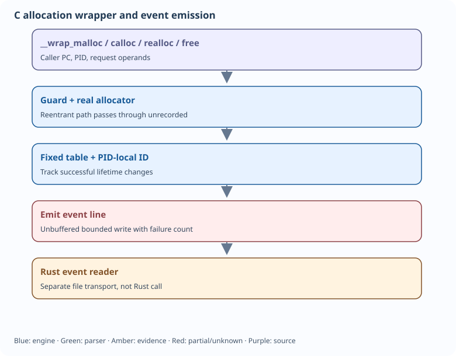
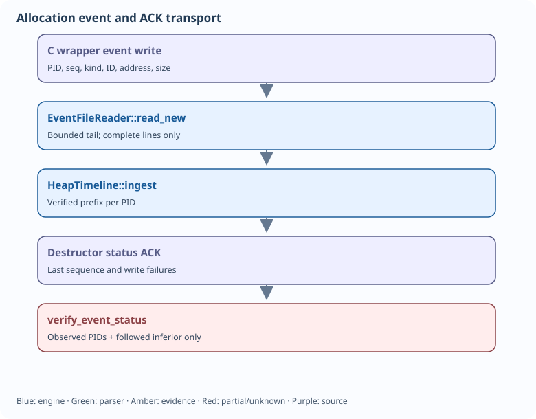
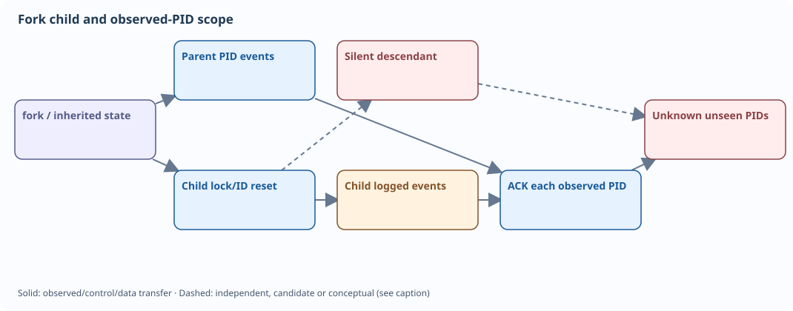

30 · C allocator runtime: interception and transport #
Key terms #
| Term | Plain meaning |
|---|---|
--wrap | A linker feature that routes a linked malloc call to __wrap_malloc; the wrapper calls __real_malloc after recording it. |
| Event ACK | A separate end-of-process status line giving the last event number and failed-write count, when normal shutdown permits it. |
>
The big picture #
The debug executable links c_runtime/alloc_tracker.c through linker --wrap references to malloc, calloc, realloc, and free. It records operations actually intercepted by the linked executable, not every allocation in the process. src/allocation_tracker.rs::ALLOC_RUNTIME_C embeds this translation unit and write_runtime_source(session_dir: &Path) -> Result<PathBuf> writes it into the session directory (src/allocation_tracker.rs:30-38). trace_program_inner(config: TraceConfig) -> Result<DebugSessionTrace> hands that file to compiler::compile_project (src/trace.rs:167,226-237); run_gdb_phase(...) supplies the event and status paths in the inferior environment (src/trace.rs:1113-1124,1171-1189). For reconstruction and the meaning of verified history, see Heap timeline; for other executions, see Independent diagnostics.
Source file: c_runtime/alloc_tracker.c #
Lifecycle, lock and table #
cte_init(void) is constructor priority 101 (c_runtime/alloc_tracker.c:293-317). An absent/empty C_TRACE_EVENT_FILE or failed event-file open leaves g_fd=-1: wrappers pass through. Otherwise it opens the event file append-only with mode 0600, optionally opens the independent C_TRACE_EVENT_STATUS_FILE the same way, and registers pthread_atfork(NULL, NULL, cte_after_fork_child). Registration failure closes the descriptors and disables instrumentation. The status-file open can fail independently: events can still be written, but there can be no valid terminal ACK. cte_fini(void) (:319-337) attempts the status line only if both descriptors are valid, on normal destructor execution, then closes them. _exit, a crash, or a killed process need not run it.
State is process-local static storage: g_table has CTE_TABLE_SLOTS=1<<17 entries, each {addr,id,size} with address zero marking an empty slot; g_seq and g_ids count emitted attempts and issued allocation IDs respectively; g_write_failures counts failed event emissions (:64-82). static unsigned long cte_hash(unsigned long x) (:161-169) mixes address bits. static cte_slot *cte_find(unsigned long addr) probes linearly until an empty cell or match (:171-181). static int cte_insert(unsigned long addr, unsigned long id, unsigned long size) finds an empty cell or returns zero when full (:183-196); the wrapper still emits the event on overflow. static void cte_remove(unsigned long addr) clears the matching cell and reinserts the following cluster so searches do not stop too early; there are no tombstones (:198-218). The Rust timeline can match an unindexed predecessor by (pid,address), but neither table overflow nor address equality establishes pointer provenance.
cte_lock(void) and cte_unlock(void) (:108-126) use a test-and-set spinlock around real allocator calls, table changes, ID/sequence updates and writes. g_busy is a thread-local reentry guard: allocation inside tracking calls the real allocator without another event. cte_after_fork_child(void) (:136-143) atomically releases the inherited lock, resets counters, and sets g_child_reset; the child's first lock clears its inherited address table (:117-120). Clearing is deferred out of the child callback. No prepare/parent lock is taken across foreign atfork handlers. Forking inside an allocator or a foreign handler that later acquires the lock is unsupported; the wrapper cannot make libc allocation after a multithreaded fork generally safe (:128-135). CTE_TESTING enables fault/lock hooks only in test builds (:84-97,145-154), not in production.
Wrappers and state transitions #
Each wrapper passes through if g_busy or g_fd<0, otherwise sets the guard, captures __builtin_return_address(0), locks, calls the corresponding __real_* once, saves errno, emits an event, adjusts the table, unlocks, restores errno, and returns the real result. The captured PC is a return address, not intrinsically a verified source expression; tail calls/inlining can make it unreliable (:41-47,343-467).
| Qualified C signature | Branch and ownership result |
|---|---|
void *__wrap_malloc(size_t size) (:343-361) | Issues a local ID even on NULL; emits ok or failed, inserting {address,id,size} only for non-NULL. |
void *__wrap_calloc(size_t nmemb, size_t size) (:363-385) | Calls real calloc with original operands. Computes nmemb*size only if representable; on overflow records byte size 0, status overflow, and both original operands. Otherwise records ok or failed, inserts only non-NULL. A zero-size successful allocation can have size zero and a real nonzero address. |
void *__wrap_realloc(void *ptr, size_t size) (:387-443) | Looks up the old address before calling real realloc under the same lock. ptr==NULL: fresh ID, new or failed. Same returned address: fresh ID, ok_same if table-held or new if predecessor untracked; replace/insert table entry. Non-NULL moved result: fresh ID, ok_moved, remove old and insert new. NULL with non-NULL old pointer and size==0: zero, old ID, remove old (glibc contract used here). NULL with nonzero size: failed, old ID, leave original entry intact. IDs are new for successful in-place as well as moving realloc, not merely for address changes. |
void __wrap_free(void *ptr) (:445-467) | Looks up address and size, calls real free, emits ok for table-held, unknown for non-NULL untracked, or null for NULL; removes only a tracked entry. ID zero marks missing table identity. Calling free on an invalid pointer remains the C program's undefined behavior; logging is not a safety mechanism. |
The table maps addresses, not ownership of pointers. A later successful allocation can reuse a freed numeric address with a different lifetime ID. If the C table filled, a free unknown or a realloc with old_id=0 can still be paired with a live observed address by Rust, provided its history is reliable (reconstruction). Internal allocations inside unwrapped shared libraries, custom allocators, and strdup internals are not intercepted (:41-46).
Event rows, partial writes and terminal ACK #
static void cte_emit_locked(const char *kind, unsigned long id, unsigned long addr, unsigned long size, unsigned long old_id, unsigned long old_addr, unsigned long caller, const char *status, unsigned long nmemb, unsigned long element_size) increments g_seq, formats a line into a 320-byte stack buffer, and calls cte_write_all (:265-287). Decimal fields are pid seq id size old_id and, for calloc only, nmemb element_size; hexadecimal without 0x fields are addr old_addr caller. The 10-field format is pid seq kind id addr size old_id old_addr caller status; calloc appends two operands for 12 fields (:9-25,273-281). Status values actually emitted include overflow as well as ok, failed, ok_same, ok_moved, new, zero, null, unknown (:343-467); the introductory C comment's status list omits overflow, but the code and Rust reader include it.
The following is illustrative, not captured output. The first row could represent an intercepted 24-byte malloc in PID 100; the second a free of that tracked address. The separate ACK reports the last issued sequence and zero failed writes:
# alloc_events.txt (illustrative; comments are not part of the actual file)
100 1 malloc 1 1000 24 0 0 4011b6 ok
100 2 free 1 1000 24 0 0 4011d0 ok
# alloc_event_status.txt (illustrative)
100 2 0static int cte_write_all(int fd, const char *buf, size_t len, int event) retries short writes, retries EINTR at most eight times, and fails on zero write or any other error (:224-263). No rollback of bytes already appended is possible: a partially written row may be completed by a later append and must not be trusted merely because it has a newline. cte_emit_locked increments g_write_failures (saturating at ULONG_MAX) for a failed/oversized emission (:282-286); the destructor writes pid seq write_failures\n through the separate status descriptor (:322-330). The reader verifies ACKs against observed sequences and the followed inferior; a clean-looking prefix cannot prove a failed last event did not exist. A missing ACK, nonzero failure count or wrong sequence downgrades completeness, rather than erasing observed rows (verification). Neither transport nor ACK authenticates files against hostile modification.
Tests and boundaries #
tests/heap_instrumentation.rs:152-334 compiles real wrapped C fixtures: normal ACK, PID-local child restart and lock-holder fork, multithread serialization, partial/EINTR retry, terminal EIO/zero/repeated-EINTR/partial-then-error, missing/failed ACK and failed status-file open. The terminal-write test feeds actual C files to EventFileReader and verify_event_status, demonstrating why a contiguous prefix alone is insufficient (:261-305). The later release closure documents observed, silent and unacknowledged children; a silent child with no event/ACK is not discoverable. This is Linux/GCC/glibc-oriented instrumentation on a 64-bit unsigned long target (c_runtime/alloc_tracker.c:55-58), not an all-allocator, all-libc or all-process census.
Diagram notes #
Allocator wrapper sequence #


A linked wrapper calls the real allocator once, updates a fixed table and appends a PID-local event.
Event and ACK transport #


The C runtime writes a dedicated event file and separate terminal status; Rust consumes complete rows and checks ACKs.
Fork and PID scope #


A child resets inherited allocator state; an unlogged silent descendant remains unknown to the Rust reader.